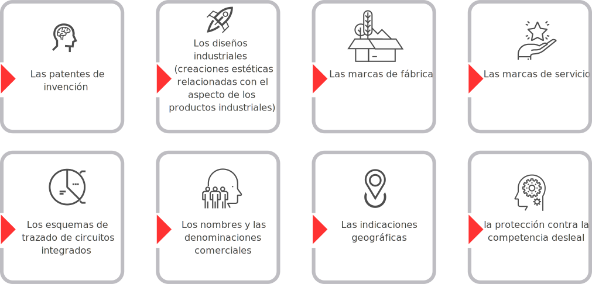

1. Productos de la Ciencia, la Tecnología y la Innovación
El estudio de los nuevos productos de la ciencia la tecnología y la innovación que han ocurrido en los últimos años debe pasar necesariamente por el examen de la rápida incorporación de las nuevas tecnologías de la información y las comunicaciones, de forma productiva o no, a todas las dimensiones de nuestra existencia y en particular a casi todos los procesos productivos, que ha inducido cambios a veces radicales en las relaciones sociales de producción, pues ha afectado el reparto del valor agregado que se genera en las actividades económicas y también la forma en que dos categorías abstractas como el trabajo y el capital se relacionan, se organizan y se transforman hacia nuevas comprensiones y significados.
1.1 Tipos de propiedad intelectual

Las transformaciones a las que se hace referencia han tomado forma hacia la estructuración de productos más complejos de información, y propios de estos cambios tales como; patentes, publicaciones, nuevos servicios y nuevas formas de comunicación, canales de transferencia del conocimiento y la necesidad de reconocer los sistemas socio técnicos que comprenden el estudio de las dimensiones asociadas que involucran al universo empresarial; creación de empresas en red, asociaciones, alianzas, el uso de empresas externas tanto para las actividades misionales como las actividades de apoyo, lugares de trabajo multiempleo y el progresivo desvanecimiento de la división sector público/sector privado, lo que ha tenido implicaciones tanto para el marco jurídico como para la naturaleza social de las relaciones laborales.
Propiedad Industrial
La amplia aplicación que tiene el término “propiedad industrial” se explica en el Convenio de París:
Existen infinitas formas de lo que se entiende por “propiedad industrial”, pero aquí se resumen los principales tipos, a saber, las patentes de invención, los diseños industriales (creaciones estéticas relacionadas con el aspecto de los productos industriales), las marcas de fábrica, las marcas de servicio, los esquemas de trazado de circuitos integrados, los nombres y las denominaciones comerciales, las indicaciones geográficas y la protección contra la competencia desleal. En algunos casos no se aprecian tan bien las cualidades propias de una i “creación intelectual”, aun estando presentes.
Lo importante es comprender que los objetos de propiedad industrial consisten en signos que transmiten información, en particular a los consumidores, en relación con los productos y servicios disponibles en el mercado. La protección tiene por finalidad impedir toda utilización no autorizada de dichos signos, que pueda inducir a error a los consumidores, así como toda práctica que induzca a error en general. (OMPI, 2016)
Derechos de autor

El derecho de autor se aplica a las creaciones literarias y artísticas como los libros, las obras musicales, las pinturas, las esculturas, las películas y las obras realizadas por medios tecnológicos como los programas informáticos y las bases de datos electrónicas. En algunos idiomas, el derecho de autor se denomina copyright. Aunque mediante el Derecho internacional se ha logrado cierta convergencia, esta distinción pone de manifiesto una diferencia histórica en la evolución de estos derechos que se refleja todavía en muchos sistemas de derecho de autor. El término copyright se refiere al acto de copiar una obra original que, en lo que respecta a las creaciones literarias y artísticas, sólo puede ser efectuado por el autor o con su autorización.
La expresión derecho de autor nos remite a la persona creadora de una obra artística, su autor, subrayando así que, como se reconoce en la mayor parte de las legislaciones, el autor goza de derechos específicos sobre sus creaciones que solo él puede ejercer, los cuales se denominan, con frecuencia, derechos morales, como el derecho a impedir la reproducción deformada de la misma, mientras que existen otros derechos, como el derecho a efectuar copias, que pueden ser ejercidos por terceros, por ejemplo, por todo editor que obtenga una licencia del autor con ese fin. (OMPI, 2016).
Anexo 2. Presentación derechos de autor.
1.2 Nuevos servicios y nuevas formas de comunicación

“Existe un cierto y creciente consenso sobre la necesidad de llevar el conocimiento científico a la sociedad y conseguir ciudadanos formados e informados, que apoyen la ciencia y su financiación y dispongan de suficiente criterio y opinión ante cuestiones que afectan a todos. Esa tarea la realizan diversos colectivos, cuyos objetivos, herramientas y características son muy diferentes. Destacan especialmente los científicos, los periodistas, los divulgadores, las instituciones y las empresas.”
1.3 Canales de transferencia de conocimiento
La transferencia de conocimientos tiene lugar a través de canales oficiales y oficiosos. Los canales oficiales suelen estar basados en un acuerdo jurídico mediante el cual las partes establecen claramente las condiciones de la transferencia de los activos de propiedad intelectual. Los ejemplos más comunes son la cesión de licencias, las empresas emergentes y las empresas derivadas, los contratos, los proyectos de investigación, etcétera. Los canales oficiosos, por otra parte, se refieren a contactos personales y, por lo tanto, constituyen la dimensión tácita de la transferencia de conocimientos. Algunos ejemplos son la movilidad del capital humano, las publicaciones, la docencia, las interacciones en conferencias y seminarios, los intercambios informales entre investigadores o el sector académico y las empresas, los estudiantes que ingresan en el mundo laboral, etcétera.
Transferencia de tecnología. Si bien el término transferencia de conocimientos se usa con frecuencia como sinónimo de transferencia de tecnología, tienen significados diferentes. La transferencia de tecnología se refiere a la transferencia de soluciones innovadoras que están protegidas por diferentes derechos de propiedad intelectual.
La transferencia de conocimientos es un término más amplio que abarca otros campos de investigación, incluidas las ciencias sociales, así como mecanismos de transferencia menos formales. (OMPI, 2016).
1.4 El método mactor
El método Mactor que fue desarrollado en 1989 – 1990 por François Bourse y Michel Godet con motivo de los problemas de prospectiva del transporte aéreo (cf Capítulo 6 del Manual de Prospectiva Estratégica, Dunod 2007) comprende 5 fases:

Fase 1: Definir los actores y comprender su estrategia.
Fase 2: Analizar las influencias entre actores y evaluar las relaciones de fuerza determinados en la matriz MIDI.
Fase 3: Identificar los retos estratégicos y los objetivos asociados y posicionar a cada actor con respecto a cada objetivo (matriz Mao).
Fase 4: Reconocer las convergencias / divergencias (posiciones simples).
Fase 5: Formular las recomendaciones y estrategias coherentes y formar preguntas clave para el futuro.
1.5 Método de escenarios
La toma de decisiones tiene 3 niveles:
Así mismo existen métodos para ayudarnos a tomar decisiones, uno de ellos es el método de escenarios. El método de escenarios es el más apropiado para las decisiones de largo plazo, consiste en hacerse una imagen de futuro de lo que probablemente puede que ocurra en un lapso determinado de tiempo (imagen de futuro a 5, 10 o 20 años), los chinos y japoneses por ejemplo lo hacen a 30 y 40 años.
Dentro del proceso uno debe crear una imagen de lo que puede pasar y hay que plantear 4 posibles escenarios:Todo esto lo estudia la prospectiva, el problema es que el método de escenarios se trabaja a largo plazo, y en nuestro país cambian los gobiernos y las políticas cada cierto tiempo y eso impide la continuidad en los procesos y estrategias.
Por eso, debemos considerar en conjunto las decisiones tácticas y los escenarios, ya que estos demandan e involucran muchas acciones, políticas y actores.
1.6 Método multipol
Veamos un ejemplo: en el caso de las políticas, si tomamos en consideración 3 políticas diferentes, tenemos que decidir cuál se aplica primero, ya que por falta de recursos no se pueden asumir todas al mismo tiempo. Gracias al método multipol podemos ordenar la toma decisiones en 3 niveles:
Acciones de corto plazo o inmediatas.
Acciones que se pueden postergar a 1 o 2 años.
Acciones que pueden esperar 3 o 4 años.
El método es muy interesante ya que permite cruzar objetivos (que vienen de los escenarios) con posibles rutas de acción, por ejemplo en el caso de los ODS si consideramos la alimentación y el hambre cero debemos pensar en implementar políticas de:
Seguridad alimentaria
Agraria
Migración a las grandes ciudades
Educación
Es importante señalar que el método de escenarios se debe complementar con otro método, por ejemplo con el multipol, ya que este puede ordenar la ruta y el mapa para alcanzar el escenario creado con el primer método.
Actividad didáctica

¡Pon a prueba tu conocimiento!
La siguiente actividad tiene como propósito validar los conocimientos relacionados con el tema Normativa vigente proceso ECCL.
IniciarGlosario
La prospectiva estratégica:es una disciplina pero, aún más relevante, es una forma de pensar que implica anticiparse, sin restarle importancia al presente. Los perspectivistas estudian el largo plazo y toman acciones para diseñar el futuro. Si las tendencias indican un futuro indeseable, se toman medidas correctivas para modificarlo; si se espera un futuro deseable, se busca mantener el status quo.
Mactor:es un método de análisis de juego de actores que busca valorar las relaciones de fuerza entre los actores y estudiar sus convergencias y divergencias con respecto a un cierto número de posturas y de objetivos asociados.
Multipol:el método Multipol pretende comparar diferentes acciones o soluciones a un problema en función de criterios y de políticas múltiples. El objetivo del Multipol es también aportar ayuda a la decisión construyendo un tablero de análisis simple y evolutivo de las diferentes acciones o soluciones que se le ofrecen al que debe tomar la decisión.
Sistemas sociotécnicos:El término trata acerca de los aspectos sociales de las personas y la colectividad y los aspectos técnicos de la estructura organizacional y procesos. Aquí, la técnica no implica necesariamente la tecnología material, su enfoque es sobre los procedimientos y los conocimientos conexos. El término “Técnica” es usado para referirse a la estructura y un sentido más amplio de tecnicismos. “Socio Técnico” se refiere, a la interrelación de aspectos sociales y técnicos de una organización o la sociedad en su conjunto. Manrique, 2015
Material complementario
| Autor, (año del documento o material), Nombre del documento o material. | Tipo de material ( Video, capítulo de libro, articulo, otro) | Enlace del Recurso o Archivo del documento o material |
|---|---|---|
| OMPI, Principios básicos de la propiedad industrial OMPI | Documento | Descargar |
| OMPI, Principios básicos del derecho de autor y los derechos conexos | Documento | Descargar |
Referencias bibliográficas
EcuRed. (s. f.). Prospectiva Estratégica - EcuRed. https://www.ecured.cu.https://www.ecured.cu/Prospectiva_Estrat%C3%A9gica#:%7E:text=La%20prospectiva%20estrat%C3%A9gica%20es%20una,acciones%20para%20dise%C3%B1ar%20el%20futuro
GODET, M. (s. f.). Métodos de prospectiva > Los programas > Mactor: La prospective. La prospective «pour penser et agir autrement».http://es.laprospective.fr/Metodos-de-prospectiva/Los-programas/68-Mactor.html
M.Godet & P. Durance (2011). La prospectiva estratégica para las empresas y los territorios. UNESCO.
OMPI (2016). Principios básicos de la propiedad industrial.
OMPI (2016). Principios básicos del derecho de autor y los derechos conexos.
Fotografías y vectores tomados de https://www.shutterstock.com/ y https://www.freepik.es/
Licencia Creative Commons
CC BY-NC-SA
Ver licencia.